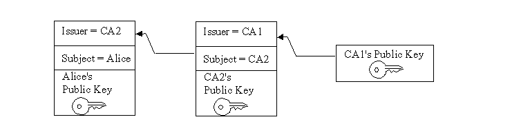

The Java Certification Path API consists of classes and interfaces for handling certification paths (also known as "certificate chains"). A certification path is an ordered list of certificates. If a certification path meets certain validation rules, it may be used to securely establish the mapping of a public key to a subject.
This API defines interfaces and abstract classes for creating, building, and validating certification paths. Implementations may be plugged in using a provider-based interface. The API is based on the Cryptographic Service Provider architecture, described in the Java Cryptography Architecture Reference Guide.
The API also includes algorithm-specific classes for building and validating X.509 certification paths according to the PKIX standards. The PKIX standards are developed by the IETF PKIX working group.
This API was originally specified using the Java Community Process program as Java Specification Request (JSR) 000055. The API was included in the Java SDK, starting with Java SE Development Kit (JDK) 1.4. Please refer to JSR 55: Certification Path API for more information on the JSR.
those who want to design secure applications that build or validate certification paths.
those who want to write a service provider implementation for building or validating certification paths.
Users of public key applications and systems must be confident that a subject's public key is genuine, i.e., that the associated private key is owned by the subject. Public key certificates are used to establish this trust. A public key (or identity) certificate is a binding of a public key to an identity, which is digitally signed by the private key of another entity, often called a Certification Authority (CA). We shall use the term CA to refer to an entity that signs a certificate for the remainder of this section.
If the user does not have a trusted copy of the public key of the CA that signed the subject's public key certificate, then another public key certificate vouching for the signing CA is required. This logic can be applied recursively, until a chain of certificates (or a certification path) is discovered from a trust anchor or a most-trusted CA to the target subject (commonly referred to as the end-entity). The most-trusted CA is usually specified by a certificate issued to a CA that the user directly trusts. In general, a certification path is an ordered list of certificates, usually comprised of the end-entity's public key certificate and zero or more additional certificates. A certification path typically has one or more encodings, allowing it to be safely transmitted across networks and to different operating system architectures.
The following figure illustrates a certification path from a most-trusted CA's public key (CA 1) to the target subject (Alice). The certification path establishes trust in Alice's public key through an intermediate CA named CA2.
Description of Figure Certification Path
A certification path must be validated before it can be relied on to establish trust in a subject's public key. Validation can consist of various checks on the certificates contained in the certification path, such as verifying the signatures and checking that each certificate has not been revoked. The PKIX standards define an algorithm for validating certification paths consisting of X.509 certificates.
Often a user may not have a certification path from a most-trusted CA to the subject. Providing services to build or discover certification paths is an important feature of public key enabled systems. RFC 2587 defines an LDAP (Lightweight Directory Access Protocol) schema definition which facilitates the discovery of X.509 certification paths using the LDAP directory service protocol.
Building and validating certification paths is an important part of many standard security protocols such as SSL/TLS, S/MIME, and IPSEC. The Java Certification Path API provides a set of classes and interfaces for developers who need to integrate this functionality into their applications. This API benefits two types of developers: those who need to write service provider implementations for a specific certification path building or validation algorithm; and those who need to access standard algorithms for creating, building, and validating certification paths in an implementation-independent manner.
The core classes of the Java Certification Path API consist of
interfaces and classes that support certification path
functionality in an algorithm- and implementation -independent
manner. The API also includes a set of algorithm-specific classes
for the PKIX standards that are discussed in the section titled
PKIX Classes. The API builds on and
extends the existing java.security.cert package for
handling certificates. The core classes can be broken up into 4
class categories: Basic, Validation, Building, and Storage:
Basic Certification Path Classes
CertPath, CertificateFactory,
CertPathParameters
Certification Path Validation Classes
CertPathValidator,
CertPathValidatorResult
Certification Path Building Classes
CertPathBuilder,
CertPathBuilderResult
Certificate/CRL Storage Classes
CertStore, CertStoreParameters,
CertSelector, CRLSelector
The following sections describe the most commonly used methods of each class and interface. Usage examples for some of the classes are interspersed throughout the guide. The complete reference documentation for the relevant Certification Path API classes can be found in:
Most of the classes and interfaces in the CertPath API are not thread-safe. However, there are some exceptions which will be noted in this guide and the API specification. Multiple threads that need to access a single non-thread-safe object concurrently should synchronize amongst themselves and provide the necessary locking. Multiple threads each manipulating separate objects need not synchronize.
The basic certification path classes provide fundamental functionality for encoding and representing certification paths. The key basic class in the Java Certification Path API is CertPath, which encapsulates the universal aspects shared by all types of certification paths. An application uses an instance of the CertificateFactory class to create a CertPath object.
The CertPath class is an abstract class for certification paths. It defines the functionality shared by all certification path objects. Various certification path types can be implemented by subclassing the CertPath class, even though they may have different contents and ordering schemes. All CertPath objects are serializable, immutable and thread-safe and share the following characteristics:
A type
This corresponds to the type of the certificates in the
certification path, for example: X.509. The type of a
CertPath is obtained using the method:
public String getType()
See Appendix A in the Java Cryptography Architecture
Reference Guide for information about standard certificate
types.
A list of certificates
The getCertificates method returns the list of
certificates in the certification path:
public abstract List<? extends Certificate> getCertificates()
This method returns a List of zero or more
java.security.cert.Certificate objects. The returned
List and the Certificates contained
within it are immutable, in order to protect the contents of the
CertPath object. The ordering of the certificates returned
depends on the type. By convention, the certificates in a
CertPath object of type X.509 are ordered starting with
the target certificate and ending with a certificate issued by the
trust anchor. That is, the issuer of one certificate is the subject
of the following one. The certificate representing the
TrustAnchor should not be included in the
certification path. Unvalidated X.509 CertPaths may not
follow this convention. PKIX CertPathValidators will detect any
departure from these conventions that cause the certification path
to be invalid and throw a CertPathValidatorException.
One or more encodings
Each CertPath object supports one or more encodings.
These are external encoded forms for the certification path, used
when a standard representation of the path is needed outside the
Java Virtual Machine (as when transmitting the path over a network
to some other party). Each path can be encoded in a default format,
the bytes of which are returned using the method:
public abstract byte[] getEncoded()
Alternatively, the getEncoded(String) method returns a
specific supported encoding by specifying the encoding format as a
String (ex: "PKCS7"). A list of standard
encoding formats are defined in Appendix A.
public abstract byte[] getEncoded(String encoding)
Also, the getEncodings method returns an iterator over the
supported encoding format Strings (the default encoding
format is returned first):
public abstract Iterator<String> getEncodings()
All CertPath objects are also
Serializable. CertPath objects are
resolved into an alternate CertPathRep
object during serialization. This allows a CertPath
object to be serialized into an equivalent representation
regardless of its underlying implementation.
CertPath objects are generated from an encoded byte
array or list of Certificates using a CertificateFactory. Alternatively,
a CertPathBuilder may be used to try to find a
CertPath from a most-trusted CA to a particular
subject. Once a CertPath object has been created, it
may be validated by passing it to the validate method
of CertPathValidator. Each of these concepts are
explained in more detail in subsequent sections.
The CertificateFactory
class is an engine
class that defines the functionality of a certificate factory.
In releases prior to JDK 1.4 it was used to generate
Certificate and CRL objects. It was
enhanced in JDK 1.4 to also be used to generate certification
path (CertPath) objects. A
CertificateFactory should not be confused with a
CertPathBuilder. A CertPathBuilder (discussed later) is
used to discover or find a certification path when one does not
exist. In contrast, a CertificateFactory is used when a
certification path has already been discovered and the caller needs
to instantiate a CertPath object from its contents which
exist in a different form such as an encoded byte array or an array
of Certificates.
See the CertificateFactory
section in the Java Cryptography Architecture Reference Guide for
details on creating a CertificateFactory object.
A CertificateFactory instance generates
CertPath objects from a List of
Certificate objects or from an InputStream
that contains the encoded form of a CertPath. Just
like a CertPath, each CertificateFactory
supports a default encoding format for certification paths (ex:
PKCS#7). To generate a CertPath object and initialize
it with the data read from an input stream (in the default encoding
format), use the generateCertPath method:
public final CertPath generateCertPath(InputStream inStream)
or from a particular encoding format:
public final CertPath generateCertPath(InputStream inStream,
String encoding)
To find out what encoding formats are supported, use the getCertPathEncodings method (the default encoding is returned first):
public final Iterator<String> getCertPathEncodings()
To generate a certification path object from a List of Certificate objects, use the following method:
public final CertPath generateCertPath(List<? extends Certificate> certificates)
A CertificateFactory always returns
CertPath objects that consist of Certificates
that are of the same type as the factory. For example, a
CertificateFactory of type X.509 returns CertPath
objects consisting of certificates that are an instance of
java.security.cert.X509Certificate.
The following code sample illustrates generating a certification path from a PKCS#7 encoded certificate reply stored in a file:
// open an input stream to the file
FileInputStream fis = new FileInputStream(filename);
// instantiate a CertificateFactory for X.509
CertificateFactory cf = CertificateFactory.getInstance("X.509");
// extract the certification path from
// the PKCS7 SignedData structure
CertPath cp = cf.generateCertPath(fis, "PKCS7");
// print each certificate in the path
List<Certificate> certs = cp.getCertificates();
for (Certificate cert : certs) {
System.out.println(cert);
}
Here's another code sample that fetches a certificate chain from a
KeyStore and converts it to a CertPath
using a CertificateFactory:
// instantiate a KeyStore with type JKS
KeyStore ks = KeyStore.getInstance("JKS");
// load the contents of the KeyStore
ks.load(new FileInputStream("./keystore"),
"password".toCharArray());
// fetch certificate chain stored with alias "sean"
Certificate[] certArray = ks.getCertificateChain("sean");
// convert chain to a List
List certList = Arrays.asList(certArray);
// instantiate a CertificateFactory for X.509
CertificateFactory cf = CertificateFactory.getInstance("X.509");
// extract the certification path from
// the List of Certificates
CertPath cp = cf.generateCertPath(certList);
Note that there is an existing
method in CertificateFactory named
generateCertificates that parses a sequence of
Certificates. For encodings consisting of multiple
certificates, use generateCertificates when you want
to parse a collection of possibly unrelated certificates.
Otherwise, use generateCertPath when you want to
generate a CertPath and subsequently validate it with
a CertPathValidator (discussed later).
The CertPathParameters interface is a transparent
representation of the set of parameters used with a particular
certification path builder or validation algorithm. Its main
purpose is to group (and provide type safety for) all certification
path parameter specifications. The CertPathParameters
interface extends the Cloneable interface and defines
a clone() method that does not throw an exception. All
concrete implementations of this interface should implement and
override the Object.clone() method, if necessary. This
allows applications to clone any CertPathParameters
object.
Objects implementing the CertPathParameters interface
are passed as arguments to methods of the CertPathValidator and CertPathBuilder classes. Typically, a
concrete implementation of the CertPathParameters
interface will hold a set of input parameters specific to a
particular certification path build or validation algorithm. For
example, the PKIXParameters class is an implementation
of the CertPathParameters interface that holds a set
of input parameters for the PKIX certification path validation
algorithm. One such parameter is the set of most-trusted CAs that
the caller trusts for anchoring the validation process. This
parameter among others is discussed in more detail in the section
discussing the PKIXParameters class.
The Java Certification Path API includes classes and interfaces for validating certification paths. An application uses an instance of the CertPathValidator class to validate a CertPath object. If successful, the result of the validation algorithm is returned in an object implementing the CertPathValidatorResult interface.
The CertPathValidator class is an engine class used to validate a certification path.
As with all engine classes, the way to get a CertPathValidator object for a particular validation algorithm is to call one of the getInstance static factory methods on the CertPathValidator class:
public static CertPathValidator getInstance(String algorithm)
public static CertPathValidator getInstance(String algorithm,
String provider)
public static CertPathValidator getInstance(String algorithm,
Provider provider)
The algorithm parameter is the name of a certification
path validation algorithm (for example, "PKIX"). Standard
CertPathValidator algorithm names are listed in
Appendix A.
Once a CertPathValidator object is created, paths can be validated by calling the validate method, passing it the certification path to be validated and a set of algorithm-specific parameters:
public final CertPathValidatorResult
validate(CertPath certPath, CertPathParameters params)
throws CertPathValidatorException,
InvalidAlgorithmParameterException
If the validation algorithm is successful, the result is returned in an object implementing the CertPathValidatorResult interface. Otherwise, a CertPathValidatorException is thrown. The CertPathValidatorException contains methods that return the CertPath, and if relevant, the index of the certificate that caused the algorithm to fail and the root exception or cause of the failure.
Note that the CertPath and
CertPathParameters passed to the validate
method must be of a type that is supported by the validation
algorithm. Otherwise, an
InvalidAlgorithmParameterException is thrown. For
example, a CertPathValidator instance that implements the
PKIX algorithm validates CertPath objects of type X.509
and CertPathParameters that are an instance of
PKIXParameters.
The CertPathValidatorResult interface is a transparent
representation of the successful result or output of a
certification path validation algorithm. Its main purpose is to
group (and provide type safety for) all validation results. Like
the CertPathParameters interface,
CertPathValidatorResult extends Cloneable
and defines a clone() method that does not throw an
exception. This allows applications to clone any
CertPathValidatorResult object.
Objects implementing the CertPathValidatorResult
interface are returned by the validate method of
CertPathValidator (only
when successful; otherwise a
CertPathValidatorException is thrown with a
description of the failure). Typically, a concrete implementation
of the CertPathValidatorResult interface will hold a
set of output parameters specific to a particular certification
path validation algorithm. For example, the
PKIXCertPathValidatorResult class is an implementation
of the CertPathValidatorResult interface which
contains methods to get the output parameters of the PKIX
certification path validation algorithm. One such parameter is the
valid policy tree. This parameter among others is discussed in more
detail in the section discussing the PKIXCertPathValidatorResult
class.
Here's a simplified code sample that illustrates how to create a
CertPathValidator and use it to validate a
certification path. The sample assumes that the
CertPath and CertPathParameters objects
which are passed to the validate method have been
previously created; a more complete example will be illustrated in
the section describing the PKIX classes.
// create CertPathValidator that implements the "PKIX" algorithm
CertPathValidator cpv = null;
try {
cpv = CertPathValidator.getInstance("PKIX");
} catch (NoSuchAlgorithmException nsae) {
System.err.println(nsae);
System.exit(1);
}
// validate certification path ("cp") with specified parameters ("params")
try {
CertPathValidatorResult cpvResult = cpv.validate(cp, params);
} catch (InvalidAlgorithmParameterException iape) {
System.err.println("validation failed: " + iape);
System.exit(1);
} catch (CertPathValidatorException cpve) {
System.err.println("validation failed: " + cpve);
System.err.println("index of certificate that caused exception: "
+ cpve.getIndex());
System.exit(1);
}
The Java Certification Path API includes classes for building (or discovering) certification paths. An application uses an instance of the CertPathBuilder class to build a CertPath object. If successful, the result of the build is returned in an object implementing the CertPathBuilderResult interface.
The CertPathBuilder class is an engine class used to build a certification path.
As with all engine classes, the way to get a CertPathBuilder object for a particular build algorithm is to call one of the getInstance static factory method on the CertPathBuilder class:
public static CertPathBuilder getInstance(String algorithm)
public static CertPathBuilder getInstance(String algorithm,
String provider)
public static CertPathBuilder getInstance(String algorithm,
Provider provider)
The algorithm parameter is the name of a certification
path builder algorithm (for example, "PKIX"). Standard
CertPathBuilder algorithm names are listed in Appendix A.
Once a CertPathBuilder object is created, paths can be constructed by calling the build method, passing it an algorithm-specific parameter specification:
public final CertPathBuilderResult build(CertPathParameters params)
throws CertPathBuilderException,
InvalidAlgorithmParameterException
If the build algorithm is successful, the result is returned in an object implementing the CertPathBuilderResult interface. Otherwise, a CertPathBuilderException is thrown containing information about the failure; for example, the underlying exception (if any) and an error message.
Note that the CertPathParameters passed to the
build method must be of a type that is supported by the
build algorithm. Otherwise, an
InvalidAlgorithmParameterException is thrown.
The CertPathBuilderResult interface is a transparent representation of the result or output of a certification path builder algorithm. This interface contains a method to return the certification path that has been successfully built:
public CertPath getCertPath()
The purpose of the CertPathBuilderResult interface is
to group (and provide type safety for) all build results. Like the
CertPathValidatorResult interface,
CertPathBuilderResult extends Cloneable
and defines a clone() method that does not throw an
exception. This allows applications to clone any
CertPathBuilderResult object.
Objects implementing the CertPathBuilderResult interface are returned by the build method of CertPathBuilder.
Here's a simplified code sample that illustrates how to create a
CertPathBuilder and use it to build a certification
path. The sample assumes that the CertPathParameters
object which is passed to the build method has been
previously created; a more complete example will be illustrated in
the section describing the PKIX classes.
// create CertPathBuilder that implements the "PKIX" algorithm
CertPathBuilder cpb = null;
try {
cpb = CertPathBuilder.getInstance("PKIX");
} catch (NoSuchAlgorithmException nsae) {
System.err.println(nsae);
System.exit(1);
}
// build certification path using specified parameters ("params")
try {
CertPathBuilderResult cpbResult = cpb.build(params);
CertPath cp = cpbResult.getCertPath();
System.out.println("build passed, path contents: " + cp);
} catch (InvalidAlgorithmParameterException iape) {
System.err.println("build failed: " + iape);
System.exit(1);
} catch (CertPathBuilderException cpbe) {
System.err.println("build failed: " + cpbe);
System.exit(1);
}
The Java Certification Path API also includes the
CertStore class for retrieving certificates and CRLs
from a repository. This is useful because it allows a caller to
specify the repository a CertPathValidator or
CertPathBuilder implementation should use to find
certificates and CRLs (see the addCertStores method of
PKIXParameters for an
example).
A CertPathValidator implementation may use the
CertStore object that the caller specifies as a callback
mechanism to fetch CRLs for performing revocation checks.
Similarly, a CertPathBuilder may use the
CertStore as a callback mechanism to fetch
certificates and, if performing revocation checks, CRLs.
The CertStore class is an engine class used to provide the functionality of a certificate and certificate revocation list (CRL) repository. It can be used by CertPathBuilder and CertPathValidator implementations to find certificates and CRLs or as a general purpose certificate and CRL retrieval mechanism.
Unlike the java.security.KeyStore class, which
provides access to a cache of private keys and trusted
certificates, a CertStore is designed to provide
access to a potentially vast repository of untrusted certificates
and CRLs. For example, an LDAP implementation of
CertStore provides access to certificates and CRLs
stored in one or more directories using the LDAP protocol.
All public methods of CertStore objects are thread-safe. That
is, multiple threads may concurrently invoke these methods on a
single CertStore object (or more than one) with no ill
effects. This allows a CertPathBuilder to search for a
CRL while simultaneously searching for further certificates, for
instance.
As with all engine classes, the way to get a CertStore object for a particular repository type is to call one of the getInstance static factory methods on the CertStore class:
public static CertStore getInstance(String type,
CertStoreParameters params)
public static CertStore getInstance(String type,
CertStoreParameters params, String provider)
public static CertStore getInstance(String type,
CertStoreParameters params, Provider provider)
The type parameter is the name of a certificate
repository type (for example, "LDAP"). Standard
CertStore types are listed in Appendix
A.
The initialization parameters (params) are specific
to the repository type. For example, the initialization parameters
for a server-based repository may include the hostname and the port
of the server. An InvalidAlgorithmParameterException
is thrown if the parameters are invalid for this
CertStore type. The
getCertStoreParameters method returns the
CertStoreParameters that were used to initialize a
CertStore:
public final CertStoreParameters getCertStoreParameters()
Once you have created a CertStore object, you can retrieve certificates from the repository using the getCertificates method. This method takes a CertSelector (discussed in more detail later) object as an argument, which specifies a set of selection criteria for determining which certificates should be returned:
public final Collection<? extends Certificate> getCertificates(CertSelector selector)
throws CertStoreException
This method returns a Collection of
java.security.cert.Certificate objects that satisfy the
selection criteria. An empty Collection is returned if
there are no matches. A CertStoreException is usually
thrown if an unexpected error condition is encountered, such as a
communications failure with a remote repository.
For some CertStore implementations, it may not be feasible to search the entire repository for certificates or CRLs that match the specified selection criteria. In these instances, the CertStore implementation may use information that is specified in the selectors to locate certificates and CRLs. For instance, an LDAP CertStore may not search all entries in the directory. Instead, it may just search entries that are likely to contain the certificates it is looking for. If the CertSelector provided does not provide enough information for the LDAP CertStore to determine which entries it should look in, the LDAP CertStore may throw a CertStoreException.
You can also retrieve CRLs from the repository using the getCRLs method. This method takes a CRLSelector (discussed in more detail later) object as an argument, which specifies a set of selection criteria for determining which CRLs should be returned:
public final Collection<? extends CRL> getCRLs(CRLSelector selector)
throws CertStoreException
This method returns a Collection of java.security.cert.CRL objects that satisfy the selection criteria. An empty Collection is returned if there are no matches.
The CertStoreParameters interface is a transparent
representation of the set of parameters used with a particular
CertStore. Its main purpose is to group (and provide
type safety for) all certificate storage parameter specifications.
The CertStoreParameters interface extends the
Cloneable interface and defines a clone
method that does not throw an exception. Implementations of this
interface should implement and override the
Object.clone() method, if necessary. This allows
applications to clone any CertStoreParameters
object.
Objects implementing the CertStoreParameters interface are passed as arguments to the getInstance method of the CertStore class. Two classes implementing the CertStoreParameters interface are defined in this API: the LDAPCertStoreParameters and the CollectionCertStoreParameters classes.
The LDAPCertStoreParameters class is an implementation
of the CertStoreParameters interface and holds a set of
minimal initialization parameters (host and port number of the
directory server) for retrieving certificates and CRLs from a
CertStore of type LDAP.
Please refer to the LDAPCertStoreParameters API documentation for more detailed information on this class.
The CollectionCertStoreParameters class is an
implementation of the CertStoreParameters interface and
holds a set of initialization parameters for retrieving
certificates and CRLs from a CertStore of type
Collection.
Please refer to the CollectionCertStoreParameters API documentation for more detailed information on this class.
The CertSelector and CRLSelector interfaces
are a specification of the set of criteria for selecting
certificates and CRLs from a collection or large group of
certificates and CRLs. The interfaces group and provide type safety
for all selector specifications. Each selector interface extends
Cloneable and defines a clone() method
that does not throw an exception. This allows applications to clone
any CertSelector or CRLSelector
object.
The CertSelector and CRLSelector interfaces each define a method named match. The match method takes a Certificate or CRL object as an argument and returns true if the object satisfies the selection criteria. Otherwise, it returns false. The match method for the CertSelector interface is defined as follows:
public boolean match(Certificate cert)
and for the CRLSelector interface:
public boolean match(CRL crl)
Typically, objects implementing these interfaces are passed as
parameters to the getCertificates and
getCRLs methods of the CertStore class.
These methods return a Collection of
Certificates or CRLs from the
CertStore repository that match the specified
selection criteria. CertSelectors may also be used to
specify the validation constraints on a target or end-entity
certificate in a certification path (see for example, the
PKIXParameters.setTargetCertConstraints
method.
The X509CertSelector class is an implementation of the CertSelector interface that defines a set of criteria for selecting X.509 certificates. An X509Certificate object must match all of the specified criteria to be selected by the match method. The selection criteria are designed to be used by a CertPathBuilder implementation to discover potential certificates as it builds an X.509 certification path.
For example, the setSubject method of
X509CertSelector allows a PKIX
CertPathBuilder to filter out
X509Certificates that do not match the issuer name of
the preceding X509Certificate in a partially completed
chain. By setting this and other criteria in an
X509CertSelector object, a
CertPathBuilder is able to discard irrelevant
certificates and more easily find an X.509 certification path that
meets the requirements specified in the
CertPathParameters object.
Please refer to http://www.ietf.org/rfc/rfc3280.txt for definitions of the X.509 certificate extensions mentioned in this section.
An X509CertSelector object is created by calling the default constructor:
public X509CertSelector()
No criteria are initially set (any X509Certificate
will match).
The selection criteria allow a caller to match on different components of an X.509 certificate. A few of the methods for setting selection criteria are described here. Please refer to the X509CertSelector API documentation for details on the other methods.
The setIssuer methods set the issuer criterion:
public void setIssuer(X500Principal issuer)
public void setIssuer(String issuerDN)
public void setIssuer(byte[] issuerDN)
The specified distinguished name (in X500Principal,
RFC 2253 String
or ASN.1 DER encoded form) must match the issuer distinguished name
in the certificate. If null, any issuer distinguished name will do.
Note that use of an X500Principal to represent a
distinguished name is preferred because it is more efficient and
suitably typed.
Similarly, the setSubject methods set the subject criterion:
public void setSubject(X500Principal subject)
public void setSubject(String subjectDN)
public void setSubject(byte[] subjectDN)
The specified distinguished name (in X500Principal,
RFC 2253 String or ASN.1 DER encoded form) must match the subject
distinguished name in the certificate. If null, any subject
distinguished name will do.
The setSerialNumber method sets the serialNumber criterion:
public void setSerialNumber(BigInteger serial)
The specified serial number must match the certificate serial number in the certificate. If null, any certificate serial number will do.
The setAuthorityKeyIdentifier method sets the authorityKeyIdentifier criterion:
public void setAuthorityKeyIdentifier(byte[] authorityKeyID)
The certificate must contain an Authority Key Identifier extension matching the specified value. If null, no check will be done on the authorityKeyIdentifier criterion.
The setCertificateValid method sets the certificateValid criterion:
public void setCertificateValid(Date certValid)
The specified date must fall within the certificate validity period for the certificate. If null, any date is valid.
The setKeyUsage method sets the keyUsage criterion:
public void setKeyUsage(boolean[] keyUsage)
The certificate's Key Usage Extension must allow the specified key usage values (those which are set to true). If null, no keyUsage check will be done.
The current values for each of the selection criteria can be retrieved using an appropriate get method. Please refer to the X509CertSelector API documentation for further details on these methods.
Here is an example of retrieving X.509 certificates from an LDAP CertStore with the X509CertSelector class.
First, we create the LDAPCertStoreParameters object
that we will use to initialize the CertStore object
with the hostname and port of the LDAP server:
LDAPCertStoreParameters lcsp = new
LDAPCertStoreParameters("ldap.sun.com", 389);
Next, create the CertStore
object, and pass it the LDAPCertStoreParameters
object, as in the following statement:
CertStore cs = CertStore.getInstance("LDAP", lcsp);
This call creates a CertStore object that retrieves certificates and CRLs from an LDAP repository using the schema defined in RFC 2587.
The following block of code establishes an
X509CertSelector to retrieve all unexpired (as of the
current date and time) end-entity certificates issued to a
particular subject with 1) a key usage that allows digital
signatures, and 2) a subject alternative name with a specific email
address:
X509CertSelector xcs = new X509CertSelector();
// select only unexpired certificates
xcs.setCertificateValid(new Date());
// select only certificates issued to
// 'CN=alice, O=xyz, C=us'
xcs.setSubject(new X500Principal("CN=alice, O=xyz, C=us"));
// select only end-entity certificates
xcs.setBasicConstraints(-2);
// select only certificates with a digitalSignature
// keyUsage bit set (set the first entry in the
// boolean array to true)
boolean[] keyUsage = {true};
xcs.setKeyUsage(keyUsage);
// select only certificates with a subjectAltName of
// 'alice@xyz.example.com' (1 is the integer value of
// an RFC822Name)
xcs.addSubjectAlternativeName(1, "alice@xyz.example.com");
Then we pass the selector to the getCertificates method of our CertStore object that we previously created:
Collection<Certificate> certs = cs.getCertificates(xcs);
A PKIX CertPathBuilder may use similar code to help
discover and sort through potential certificates by discarding
those that do not meet validation constraints or other
criteria.
The X509CRLSelector class is an implementation of the CRLSelector interface that defines a set of criteria for selecting X.509 CRLs. An X509CRL object must match all of the specified criteria to be selected by the match method. The selection criteria are designed to be useful to a CertPathValidator or CertPathBuilder implementation that must retrieve CRLs from a repository to check the revocation status of certificates in an X.509 certification path.
For example, the setDateAndTime method of
X509CRLSelector allows a PKIX
CertPathValidator to filter out X509CRLs
that have been issued after or expire before the time indicated. By
setting this and other criteria in an X509CRLSelector
object, it allows the CertPathValidator to discard
irrelevant CRLs and more easily check if a certificate has been
revoked.
Please refer to http://www.ietf.org/rfc/rfc3280.txt for definitions of the X.509 CRL fields and extensions mentioned in this section.
An X509CRLSelector object is created by calling the default constructor:
public X509CRLSelector()
No criteria are initially set (any X509CRL will
match).
The selection criteria allow a caller to match on different components of an X.509 CRL. Most of the methods for setting selection criteria are described here. Please refer to the X509CRLSelector API documentation for details on the remaining methods.
The setIssuers and setIssuerNames methods
set the issuerNames criterion:
public void setIssuers(Collection<X500Principal> issuers)
public void setIssuerNames(Collection<?> names)
The issuer distinguished name in the CRL must match at least one
of the specified distinguished names. The setIssuers
method is preferred as the use of X500Principals to
represent distinguished names is more efficient and suitably typed.
For the setIssuerNames method, each entry of the
names argument is either a String or a byte array
(representing the name, in RFC 2253 or ASN.1 DER encoded form,
respectively). If null, any issuer distinguished name will do.
The setMinCRLNumber and setMaxCRLNumber methods set the minCRLNumber and maxCRLNumber criterion:
public void setMinCRLNumber(BigInteger minCRL)
public void setMaxCRLNumber(BigInteger maxCRL)
The CRL must have a CRL Number extension whose value is greater than or equal to the specified value if the setMinCRLNumber method is called, and less than or equal to the specified value if the setMaxCRLNumber method is called. If the value passed to one of these methods is null, the corresponding check is not done.
The setDateAndTime method sets the dateAndTime criterion:
public void setDateAndTime(Date dateAndTime)
The specified date must be equal to or later than the value of the thisUpdate component of the CRL and earlier than the value of the nextUpdate component. If null, no dateAndTime check will be done.
The setCertificateChecking method sets the certificate whose revocation status is being checked:
public void setCertificateChecking(X509Certificate cert)
This is not a criterion. Rather, it is optional information that
may help a CertStore find CRLs that would be relevant
when checking revocation for the specified certificate. If null is
specified, then no such optional information is provided. An
application should always call this method when checking revocation
for a particular certificate, as it may provide the
CertStore with more information for finding the
correct CRLs and filtering out irrelevant ones.
The current values for each of the selection criteria can be retrieved using an appropriate get method. Please refer to the X509CRLSelectorAPI documentation for further details on these methods.
Creating an X509CRLSelector to retrieve CRLs from an LDAP repository is similar to the X509CertSelector example. Suppose we want to retrieve all current (as of the current date and time) CRLs issued by a specific CA and with a minimum CRL number. First, we create an X509CRLSelector object and call the appropriate methods to set the selection criteria:
X509CRLSelector xcrls = new X509CRLSelector();
// select CRLs satisfying current date and time
xcrls.setDateAndTime(new Date());
// select CRLs issued by 'O=xyz, C=us'
xcrls.addIssuerName("O=xyz, C=us");
// select only CRLs with a CRL number at least '2'
xcrls.setMinCRLNumber(new BigInteger("2"));
Then we pass the selector to the getCRLs method of our CertStore object (created in the X509CertSelector example):
Collection<CRL> crls = cs.getCRLs(xcrls);
The Java Certification Path API also includes a set of algorithm-specific classes modeled for use with the PKIX certification path validation algorithm defined in RFC 3280: Public Key Infrastructure Certificate and Certificate Revocation List (CRL) Profile.
This class represents a "most-trusted CA", which is used as a
trust anchor for validating X.509 certification paths. A
most-trusted CA includes the public key of the CA, the CA's name,
and any constraints upon the set of paths which may be validated
using this key. These parameters can be specified in the form of a
trusted X509Certificate or as individual
parameters.
All TrustAnchor objects are immutable and
thread-safe. That is, multiple threads may concurrently invoke the
methods defined in this class on a single TrustAnchor
object (or more than one) with no ill effects. Requiring
TrustAnchor objects to be immutable and thread-safe
allows them to be passed around to various pieces of code without
worrying about coordinating access.
Note that although this class is described as a PKIX class it may be used with other X.509 certification path validation algorithms.
To instantiate a TrustAnchor object, a caller must
specify "the most-trusted CA" as a trusted
X509Certificate or public key and distinguished name
pair. The caller may also optionally specify name constraints that
are applied to the trust anchor by the validation algorithm during
initialization. Note that support for name constraints on trust
anchors is not required by the PKIX algorithm, therefore a PKIX
CertPathValidator or CertPathBuilder may
choose not to support this parameter and instead throw an
exception. Use one of the following constructors to create a
TrustAnchor object:
public TrustAnchor(X509Certificate trustedCert,
byte[] nameConstraints)
public TrustAnchor(X500Principal caPrincipal, PublicKey pubKey,
byte[] nameConstraints)
public TrustAnchor(String caName, PublicKey pubKey,
byte[] nameConstraints)
The nameConstraints parameter is specified as a byte
array containing the ASN.1 DER encoding of a NameConstraints
extension. An IllegalArgumentException is thrown if
the name constraints cannot be decoded (are not formatted
correctly).
Each of the parameters can be retrieved using a corresponding get method:
public final X509Certificate getTrustedCert()
public final X500Principal getCA()
public final String getCAName()
public final PublicKey getCAPublicKey()
public final byte[] getNameConstraints()
Note that the getTrustedCert method returns
null if the trust anchor was specified as a public key
and name pair. Likewise, the getCA,
getCAName and getCAPublicKey methods
return null if the trust anchor was specified as an
X509Certificate.
This class (which implements the CertPathParameters interface) specifies the set of input parameters defined by the PKIX certification path validation algorithm. It also includes a few additional useful parameters.
An X.509 CertPath object and a
PKIXParameters object are passed as arguments to the
validate method of a CertPathValidator instance
implementing the PKIX algorithm. The CertPathValidator
uses the parameters to initialize the PKIX certification path
validation algorithm.
To instantiate a PKIXParameters object, a caller
must specify "the most-trusted CA(s)" as defined by the PKIX
validation algorithm. The most-trusted CAs can be specified using
one of two constructors:
public PKIXParameters(Set<TrustAnchor> trustAnchors)
throws InvalidAlgorithmParameterException
public PKIXParameters(KeyStore keystore)
throws KeyStoreException, InvalidAlgorithmParameterException
The first constructor allows the caller to specify the
most-trusted CAs as a Set of TrustAnchor
objects. Alternatively, a caller can use the second constructor and
specify a KeyStore instance containing trusted
certificate entries, each of which will be considered as a
most-trusted CA.
Once a PKIXParameters object has been created, a caller can set (or replace the current value of) various parameters. A few of the methods for setting parameters are described here. Please refer to the PKIXParameters API documentation for details on the other methods.
The setInitialPolicies method sets the initial policy
identifiers, as specified by the PKIX validation algorithm. The
elements of the Set are object identifiers (OIDs)
represented as a String. If the
initialPolicies parameter is null or not set, any
policy is acceptable:
public void setInitialPolicies(Set<String> initialPolicies)
The setDate method sets the time for which the validity of the path should be determined. If the date parameter is not set or is null, the current date is used:
public void setDate(Date date)
The setPolicyMappingInhibited method sets the value of the policy mapping inhibited flag. The default value for the flag, if not specified, is false:
public void setPolicyMappingInhibited(boolean val)
The setExplicitPolicyRequired method sets the value of the explicit policy required flag. The default value for the flag, if not specified, is false:
public void setExplicitPolicyRequired(boolean val)
The setAnyPolicyInhibited method sets the value of the any policy inhibited flag. The default value for the flag, if not specified, is false:
public void setAnyPolicyInhibited(boolean val)
The setTargetCertConstraints method allows the caller
to set constraints on the target or end-entity certificate. For
example, the caller can specify that the target certificate must
contain a specific subject name. The constraints are specified as a
CertSelector object. If the selector
parameter is null or not set, no constraints are defined on the
target certificate:
public void setTargetCertConstraints(CertSelector selector)
The setCertStores method allows a caller to specify a
List of CertStore objects that will be used
by a PKIX implementation of CertPathValidator to find CRLs
for path validation. This provides an extensible mechanism for
specifying where to locate CRLs. The setCertStores method
takes a List of CertStore objects as a
parameter. The first CertStores in the list may be
preferred to those that appear later.
public void setCertStores(List<CertStore> stores)
The setCertPathCheckers method allows a caller to extend the PKIX validation algorithm by creating implementation-specific certification path checkers. For example, this mechanism can be used to process private certificate extensions. The setCertPathCheckers method takes a list of PKIXCertPathChecker (discussed later) objects as a parameter:
public void setCertPathCheckers(List<PKIXCertPathChecker> checkers)
The setRevocationEnabled method allows a caller to
disable revocation checking. Revocation checking is enabled by
default, since it is a required check of the PKIX validation
algorithm. However, PKIX does not define how revocation should be
checked. An implementation may use CRLs or OCSP, for example. This
method allows the caller to disable the implementation's default
revocation checking mechanism if it is not appropriate. A different
revocation checking mechanism can then be specified by calling the
setCertPathCheckers method, and passing it a
PKIXCertPathChecker that implements the alternate
mechanism.
public void setRevocationEnabled(boolean val)
The setPolicyQualifiersRejected method allows a caller to enable or disable policy qualifier processing. When a PKIXParameters object is created, this flag is set to true. This setting reflects the most common (and simplest) strategy for processing policy qualifiers. Applications that want to use a more sophisticated policy must set this flag to false.
public void setPolicyQualifiersRejected(boolean qualifiersRejected)
The current values for each of the parameters can be retrieved using an appropriate get method. Please refer to the PKIXParameters API documentation for further details on these methods.
This class (which implements the CertPathValidatorResult
interface) represents the result of the PKIX certification path
validation algorithm. It holds the valid policy tree and
subject public key resulting from the validation algorithm, and
includes methods (getPolicyTree() and
getPublicKey()) for returning them. Instances of
PKIXCertPathValidatorResult are returned by the
validate method of CertPathValidator objects
implementing the PKIX algorithm.
Please refer to the PKIXCertPathValidatorResult API documentation for more detailed information on this class.
The PKIX validation algorithm defines several outputs related to certificate policy processing. Most applications will not need to use these outputs, but all providers that implement the PKIX validation or building algorithm must support them.
The PolicyNode interface represents a node of a
valid policy tree resulting from a successful execution of the PKIX
certification path validation. An application can obtain the root
of a valid policy tree using the getPolicyTree method
of PKIXCertPathValidatorResult. Policy Trees are
discussed in more detail in the PKIX Certificate and CRL
Profile.
The getPolicyQualifiers method of
PolicyNode returns a Set of
PolicyQualifierInfo objects, each of which represents
a policy qualifier contained in the Certificate Policies extension
of the relevant certificate that this policy applies to.
Most applications will not need to examine the valid policy tree
and policy qualifiers. They can achieve their policy processing
goals by setting the policy-related parameters in
PKIXParameters. However, the valid policy tree is
available for more sophisticated applications, especially those
that process policy qualifiers.
Please refer to the PolicyNode
and PolicyQualifierInfo
API documentation for more detailed information on these
classes.
This is an example of validating a certification path with the PKIX validation algorithm. The example ignores most of the exception handling and assumes that the certification path and public key of the trust anchor have already been created.
First, create the CertPathValidator, as in the following line:
CertPathValidator cpv = CertPathValidator.getInstance("PKIX");
The next step is to create a TrustAnchor object. This will be used as an
anchor for validating the certification path. In this example, the
most-trusted CA is specified as a public key and name (name
constraints are not applied and are specified as
null):
TrustAnchor anchor = new TrustAnchor("O=xyz,C=us", pubkey, null);
The next step is to create a PKIXParameters object. This will be used
to populate the parameters used by the PKIX algorithm. In this
example, we pass to the constructor a Set containing a
single element - the TrustAnchor we created in the
previous step:
PKIXParameters params = new PKIXParameters(Collections.singleton(anchor));
Next, we populate the parameters object with constraints or other parameters used by the validation algorithm. In this example, we enable the explicitPolicyRequired flag and specify a set of initial policy OIDs (the contents of the set are not shown):
// set other PKIX parameters here
params.setExplicitPolicyRequired(true);
params.setInitialPolicies(policyIds);
The final step is to validate the certification path using the input parameter set we have created:
try {
PKIXCertPathValidatorResult result =
(PKIXCertPathValidatorResult) cpv.validate(certPath, params);
PolicyNode policyTree = result.getPolicyTree();
PublicKey subjectPublicKey = result.getPublicKey();
} catch (CertPathValidatorException cpve) {
System.out.println("Validation failure, cert["
+ cpve.getIndex() + "] :" + cpve.getMessage());
}
If the validation algorithm is successful, the policy tree and
subject public key resulting from the validation algorithm are
obtained using the getPolicyTree and
getPublicKey methods of
PKIXCertPathValidatorResult.
Otherwise, a CertPathValidatorException is thrown and the caller can catch the exception and print some details about the failure, such as the error message and the index of the certificate that caused the failure.
This class (which extends the PKIXParameters class) specifies the set of parameters to be used with CertPathBuilders that build certification paths validated against the PKIX certification path validation algorithm.
A PKIXBuilderParameters object is passed as an argument to the build method of a CertPathBuilder instance implementing the PKIX algorithm. All PKIX CertPathBuilders must return certification paths which have been validated according to the PKIX certification path validation algorithm.
Please note that the mechanism that a PKIX
CertPathBuilder uses to validate a constructed path is
an implementation detail. For example, an implementation might
attempt to first build a path with minimal validation and then
fully validate it using an instance of a PKIX
CertPathValidator, whereas a more efficient
implementation may validate more of the path as it is building it,
and backtrack to previous stages if it encounters validation
failures or dead-ends.
Creating a PKIXBuilderParameters object is similar to
creating a PKIXParameters object. However, a caller
must specify constraints on the target or end-entity
certificate when creating a PKIXBuilderParameters object.
These constraints should provide the CertPathBuilder
with enough information to find the target certificate. The
constraints are specified as a CertSelector object.
Use one of the following constructors to create a
PKIXBuilderParameters object:
public PKIXBuilderParameters(Set<TrustAnchor> trustAnchors,
CertSelector targetConstraints)
throws InvalidAlgorithmParameterException
public PKIXBuilderParameters(KeyStore keystore,
CertSelector targetConstraints)
throws KeyStoreException, InvalidAlgorithmParameterException
The PKIXBuilderParameters class inherits all of the parameters that can be set in the PKIXParameters class. In addition, the setMaxPathLength method can be called to place a limit on the maximum number of certificates in a certification path:
public void setMaxPathLength(int maxPathLength)
The maxPathLength parameter specifies the maximum
number of non-self-issued intermediate certificates that may exist
in a certification path. A CertPathBuilder instance
implementing the PKIX algorithm must not build paths longer than
the length specified. If the value is 0, the path can only contain
a single certificate. If the value is -1, the path length is
unconstrained (i.e., there is no maximum). The default maximum path
length, if not specified, is 5. This method is useful to prevent
the CertPathBuilder from spending resources and time
constructing long paths that may or may not meet the caller's
requirements.
If any of the CA certificates in the path contain a Basic
Constraints extension, the value of the pathLenConstraint component
of the extension overrides the value of the
maxPathLength parameter whenever the result is a
certification path of smaller length. There is also a corresponding
getMaxPathLength method for retrieving this
parameter:
public int getMaxPathLength()
Also, the setCertStores method (inherited from the
PKIXParameters class) is typically used by a PKIX
implementation of CertPathBuilder to find Certificates for
path construction as well as finding CRLs for path validation. This
provides an extensible mechanism for specifying where to locate
Certificates and CRLs.
This class (which extends the PKIXCertPathValidatorResult class and implements the CertPathBuilderResult interface) represents the successful result of the PKIX certification path construction algorithm. Instances of PKIXCertPathBuilderResult are returned by the build method of CertPathBuilder objects implementing the PKIX algorithm.
The getCertPath method of a
PKIXCertPathBuilderResult instance always returns a
CertPath object validated using the PKIX certification
path validation algorithm. The returned CertPath object
does not include the most-trusted CA certificate that may have been
used to anchor the path. Instead, use the
getTrustAnchor method to get the
Certificate of the most-trusted CA.
Please refer to the PKIXCertPathBuilderResult API documentation for more detailed information on this class.
This is an example of building a certification path validated
against the PKIX algorithm. Some details have been left out, such
as exception handling, and the creation of the trust anchors and
certificates for populating the CertStore.
First, create the CertPathBuilder, as in the following example:
CertPathBuilder cpb = CertPathBuilder.getInstance("PKIX");
This call creates a CertPathBuilder object that returns paths validated against the PKIX algorithm.
The next step is to create a PKIXBuilderParameters object. This will be used to populate the PKIX parameters used by the CertPathBuilder:
// Create parameters object, passing it a Set of
// trust anchors for anchoring the path
// and a target subject DN.
X509CertSelector targetConstraints = new X509CertSelector();
targetConstraints.setSubject("CN=alice,O=xyz,C=us");
PKIXBuilderParameters params =
new PKIXBuilderParameters(trustAnchors, targetConstraints);
The next step is to specify the CertStore that the CertPathBuilder will use to look for certificates and CRLs. For this example, we will populate a Collection CertStore with the certificates and CRLs:
CollectionCertStoreParameters ccsp =
new CollectionCertStoreParameters(certsAndCrls);
CertStore store = CertStore.getInstance("Collection", ccsp);
params.addCertStore(store);
The next step is to build the certification path using the input parameter set we have created:
try {
PKIXCertPathBuilderResult result =
(PKIXCertPathBuilderResult) cpb.build(params);
CertPath cp = result.getCertPath();
} catch (CertPathBuilderException cpbe) {
System.out.println("build failed: " + cpbe.getMessage());
}
If the CertPathBuilder cannot build a path that
meets the supplied parameters it will throw a
CertPathBuilderException. Otherwise, the validated
certification path can be obtained from the
PKIXCertPathBuilderResult using the
getCertPath method.
This section describes a powerful class that allows a user to extend a PKIX CertPathValidator or CertPathBuilder implementation. This is an advanced feature that most users will not need to understand. However, anyone implementing a PKIX service provider should read this section.
The PKIXCertPathChecker class is an abstract class that executes one or more checks on an X.509 certificate. Developers should create concrete implementations of the PKIXCertPathChecker class when it is necessary to dynamically extend a PKIX CertPathValidator or CertPathBuilder implementation at runtime. The following are a few examples of when a PKIXCertPathChecker implementation is useful:
If the revocation mechanism supplied by a PKIX CertPathValidator or CertPathBuilder
implementation is not adequate: For example, you can
use the PKIXRevocationChecker class (introduced in JDK 8; see Check Revocation Status of Certificates with PKIXRevocationChecker Class) to have more control
over the revocation mechanism, or you can implement your own
PKIXCertPathChecker to check that certificates have not been revoked.
If the user wants to recognize certificates containing a critical private extension. Since the extension is private, it will not be recognized by the PKIX CertPathValidator or CertPathBuilder implementation and a CertPathValidatorException will be thrown. In this case, a developer can implement a PKIXCertPathChecker that recognizes and processes the critical private extension.
If the developer wants to record information about each certificate processed for debugging or display purposes.
If the user wants to reject certificates with certain policy qualifiers.
The setCertPathCheckers method of the
PKIXParameters class allows a user to pass a
List of PKIXCertPathChecker objects to a PKIX
CertPathValidator or CertPathBuilder
implementation. Each of the PKIXCertPathChecker objects
will be called in turn, for each certificate processed by the PKIX
CertPathValidator or CertPathBuilder
implementation.
The PKIXCertPathChecker class does not have a public constructor. This is intentional, since creating an instance of PKIXCertPathChecker is an implementation-specific issue. For example, the constructor for a PKIXCertPathChecker implementation that uses OCSP to check a certificate's revocation status may require the hostname and port of the OCSP server:
PKIXCertPathChecker checker = new OCSPChecker("ocsp.sun.com", 1321);
Once the checker has been instantiated, it can be added as a parameter using the addCertPathChecker method of the PKIXParameters class:
params.addCertPathChecker(checker);
Alternatively, a List of checkers can be added using the setCertPathCheckers method of the PKIXParameters class.
The PKIXCertPathChecker class is abstract. It has four methods (check, getSupportedExtensions, init, and isForwardCheckingSupported) that all concrete subclasses must implement.
Implementing a PKIXCertPathChecker may be trivial or complex. A PKIXCertPathChecker implementation can be stateless or stateful. A stateless implementation does not maintain state between successive calls of the check method. For example, a PKIXCertPathChecker that checks that each certificate contains a particular policy qualifier is stateless. In contrast, a stateful implementation does maintain state between successive calls of the check method. The check method of a stateful implementation usually depends on the contents of prior certificates in the certification path. For example, a PKIXCertPathChecker that processes the NameConstraints extension is stateful.
Also, the order in which the certificates processed by a service provider implementation are presented (passed) to a PKIXCertPathChecker is very important, especially if the implementation is stateful. Depending on the algorithm used by the service provider, the certificates may be presented in reverse or forward order. A reverse ordering means that the certificates are ordered from the most trusted CA (if present) to the target subject, whereas a forward ordering means that the certificates are ordered from the target subject to the most trusted CA. The order must be made known to the PKIXCertPathChecker implementation, so that it knows how to process consecutive certificates.
The init method initializes the internal state of the checker:
public abstract void init(boolean forward)
All stateful implementations should clear or initialize any internal state in the checker. This prevents a service provider implementation from calling a checker that is in an uninitialized state. It also allows stateful checkers to be reused in subsequent operations without reinstantiating them. The forward parameter indicates the order of the certificates presented to the PKIXCertPathChecker. If forward is true, the certificates are presented from target to trust anchor; if false, from trust anchor to target.
The isForwardCheckingSupported method returns a boolean that indicates if the PKIXCertPathChecker supports forward checking:
public abstract boolean isForwardCheckingSupported()
All PKIXCertPathChecker implementations mustsupport reverse checking. A PKIXCertPathChecker implementation maysupport forward checking.
Supporting forward checking improves the efficiency of
CertPathBuilders that build forward, since it allows
paths to be checked as they are built. However, some stateful
PKIXCertPathCheckers may find it difficult or
impossible to support forward checking.
The getSupportedExtensions method returns an immutable Set of OID Strings for the X.509 extensions that the PKIXCertPathChecker implementation supports (i.e., recognizes, is able to process):
public abstract Set<String> getSupportedExtensions()
The method should return null if no extensions are processed. All implementations should return the Set of OID Strings that the check method may process.
A CertPathBuilder can use this information to
identify certificates with unrecognized critical extensions, even
when performing a forward build with a
PKIXCertPathChecker that does not support forward
checking.
The following method executes a check on the certificate:
public abstract void
check(Certificate cert, Collection<String> unresolvedCritExts)
throws CertPathValidatorException
The unresolvedCritExts parameter contains a collection of OIDs as Strings. These OIDs represent the set of critical extensions in the certificate that have not yet been resolved by the certification path validation algorithm. Concrete implementations of the check method should remove any critical extensions that it processes from the unresolvedCritExts parameter.
If the certificate does not pass the check(s), a CertPathValidatorException should be thrown.
The PKIXCertPathChecker class implements the Cloneable interface. All stateful PKIXCertPathChecker implementations must override the clone method if necessary. The default implementation of the clone method calls the Object.clone method, which performs a simple clone by copying all fields of the original object to the new object. A stateless implementation should not override the clone method. However, all stateful implementations must ensure that the default clone method is correct, and override it if necessary. For example, a PKIXCertPathChecker that stores state in an array must override the clone method to make a copy of the array, rather than just a reference to the array.
The reason that PKIXCertPathChecker objects are Cloneable is to allow a PKIX CertPathBuilder implementation to efficiently backtrack and try another path when a potential certification path reaches a dead end or point of failure. In this case, the implementation is able to restore prior path validation states by restoring the cloned objects.
This is an example of a stateless PKIXCertPathChecker implementation. It checks if a private extension exists in a certificate and processes it according to some rules.
import java.security.cert.Certificate;
import java.security.cert.X509Certificate;
import java.util.Collection;
import java.util.Collections;
import java.util.Set;
import java.security.cert.PKIXCertPathChecker;
import java.security.cert.CertPathValidatorException;
public class MyChecker extends PKIXCertPathChecker {
private static Set supportedExtensions =
Collections.singleton("2.16.840.1.113730.1.1");
/*
* Initialize checker
*/
public void init(boolean forward)
throws CertPathValidatorException {
// nothing to initialize
}
public Set getSupportedExtensions() {
return supportedExtensions;
}
public boolean isForwardCheckingSupported() {
return true;
}
/*
* Check certificate for presence of Netscape's
* private extension
* with OID "2.16.840.1.113730.1.1"
*/
public void check(Certificate cert,
Collection unresolvedCritExts)
throws CertPathValidatorException
{
X509Certificate xcert = (X509Certificate) cert;
byte[] ext =
xcert.getExtensionValue("2.16.840.1.113730.1.1");
if (ext == null)
return;
//
// process private extension according to some
// rules - if check fails, throw a
// CertPathValidatorException ...
// {insert code here}
// remove extension from collection of unresolved
// extensions (if it exists)
if (unresolvedCritExts != null)
unresolvedCritExts.remove("2.16.840.1.113730.1.1");
}
}
Each PKIXCertPathChecker object must be initialized by a service provider implementation before commencing the build or validation algorithm, for example:
List<PKIXCertPathChecker> checkers = params.getCertPathCheckers();
for (PKIXCertPathChecker checker : checkers) {
checker.init(false);
}
For each certificate that it validates, the service provider implementation must call the check method of each PKIXCertPathChecker object in turn, passing it the certificate and any remaining unresolved critical extensions:
for (PKIXCertPathChecker checker : checkers) {
checker.check(cert, unresolvedCritExts);
}
If any of the checks throw a
CertPathValidatorException, a
CertPathValidator implementation should terminate the
validation procedure. However, a CertPathBuilder
implementation may simply log the failure and continue to search
for other potential paths. If all of the checks are
successful, the service provider implementation should check that
all critical extensions have been resolved and if not, consider the
validation to have failed. For example:
if (unresolvedCritExts != null &&
!unresolvedCritExts.isEmpty())
{
// note that a CertPathBuilder may have an enclosing
// try block to catch the exception below and continue on error
throw new CertPathValidatorException
("Unrecognized Critical Extension");
}
As discussed in the previous section, a CertPathBuilder implementation may need to backtrack when a potential certification path reaches a dead end or point of failure. Backtracking in this context implies returning to the previous certificate in the path and checking for other potential paths. If the CertPathBuilder implementation is validating the path as it is building it, it will need to restore the previous state of each PKIXCertPathChecker. It can do this by making clones of the PKIXCertPathChecker objects before each certificate is processed, for example:
/* clone checkers */
List newList = new ArrayList(checkers);
ListIterator li = newList.listIterator();
while (li.hasNext()) {
PKIXCertPathChecker checker = (PKIXCertPathChecker) li.next();
li.set(checker.clone());
}
Using a PKIXCertPathChecker to customize
certificate path validation is relatively straightforward.
First, consider code that validates a certificate path:
Set<TrustAnchor> trustAnchors = getTrustAnchors();
CertPath cp = getCertPath();
PKIXParameters pkixp = new PKIXParameters(trustAnchors);
pkixp.setRevocationEnabled(false);
CertPathValidator cpv = CertPathValidator.getInstance("PKIX");
PKIXCertPathValidatorResult pcpvr =
(PKIXCertPathValidatorResult)cpv.validate(cp, pkixp);
If the validation fails, the validate() method
throws an exception.
The fundamental steps are as follows:
PKIXParameters with the trust
anchors.CertPathValidator to validate the
certificate path.In this example, getTrustAnchors() and
getCertPath() are the methods that obtain CA root
certificates and the certification path.
The getTrustAnchors() method in the example must
return a Set of TrustAnchors that
represent the CA root certificates you wish to use for validation.
Here is one simple implementation that loads a single CA root
certificate from a file:
public Set<TrustAnchor> getTrustAnchors()
throws IOException, CertificateException {
InputStream in = new FileInputStream("x509_ca-certificate.cer");
CertificateFactory cf = CertificateFactory.getInstance("X.509");
X509Certificate c = (X509Certificate)cf.generateCertificate(in);
in.close();
TrustAnchor anchor = new TrustAnchor(c, null);
return Collections.singleton(anchor);
}
Similarly, here is a simple implementation of
getCertPath() that loads a certificate path from a
file:
public CertPath getCertPath() throws IOException, CertificateException {
CertificateFactory cf = CertificateFactory.getInstance("X.509");
InputStream in = new FileInputStream("certpath.pkcs7");
CertPath cp = cf.generateCertPath(in, "PKCS7");
in.close();
return cp;
}
Note that PKCS#7 does not require a specific order for the
certificates in the file, so this code only works for certification
path validation when the certificates are ordered starting from the
entity to be validated and progressing back toward the CA root. If
the certificates are not in the right order, you need to do some
additional processing. CertificateFactory has a
generateCertPath() method that accepts a
Collection, which is useful for this type of
processing.
PKIXCertPathCheckerTo customize certification path validation, add a PKIXCertPathChecker as follows. In this example,
SimpleChecker is a PKIXCertPathChecker subclass. The new lines are shown in bold.
Set<TrustAnchor> trustAnchors = getTrustAnchors();
CertPath cp = getCertPath();
PKIXParameters pkixp = new PKIXParameters(trustAnchors);
pkixp.setRevocationEnabled(false);
SimpleChecker sc = new SimpleChecker();
pkixp.addCertPathChecker(sc);
CertPathValidator cpv = CertPathValidator.getInstance("PKIX");
PKIXCertPathValidatorResult pcpvr =
(PKIXCertPathValidatorResult)cpv.validate(cp, pkixp);
SimpleChecker is a rudimentary subclass of PKIXCertPathChecker. Its check() method is called for every certificate in the certification path that is being validated. SimpleChecker uses an AlgorithmConstraints implementation to examine the signature algorithm and public key of each certificate.
import java.security.AlgorithmConstraints;
import java.security.CryptoPrimitive;
import java.security.Key;
import java.security.cert.*;
import java.util.*;
public class SimpleChecker extends PKIXCertPathChecker {
private final static Set<CryptoPrimitive> SIGNATURE_PRIMITIVE_SET =
EnumSet.of(CryptoPrimitive.SIGNATURE);
public void init(boolean forward) throws CertPathValidatorException {}
public boolean isForwardCheckingSupported() { return true; }
public Set<String> getSupportedExtensions() { return null; }
public void check(Certificate cert,
Collection<String> unresolvedCritExts)
throws CertPathValidatorException {
X509Certificate c = (X509Certificate)cert;
String sa = c.getSigAlgName();
Key key = c.getPublicKey();
AlgorithmConstraints constraints = new SimpleConstraints();
if (constraints.permits(SIGNATURE_PRIMITIVE_SET, sa, null) == false)
throw new CertPathValidatorException("Forbidden algorithm: " + sa);
if (constraints.permits(SIGNATURE_PRIMITIVE_SET, key) == false)
throw new CertPathValidatorException("Forbidden key: " + key);
}
}
Finally, SimpleConstraints is a rather severe AlgorithmConstraints implementation that allows only RSA algorithms and requires keys to be 2048 bits or larger.
import java.security.AlgorithmConstraints;
import java.security.AlgorithmParameters;
import java.security.CryptoPrimitive;
import java.security.Key;
import java.security.interfaces.RSAKey;
import java.util.Set;
public class SimpleConstraints implements AlgorithmConstraints {
public boolean permits(Set<CryptoPrimitive> primitives,
String algorithm, AlgorithmParameters parameters) {
return permits(primitives, algorithm, null, parameters);
}
public boolean permits(Set<CryptoPrimitive> primitives, Key key) {
return permits(primitives, null, key, null);
}
public boolean permits(Set<CryptoPrimitive> primitives,
String algorithm, Key key, AlgorithmParameters parameters) {
if (algorithm == null) algorithm = key.getAlgorithm();
if (algorithm.indexOf("RSA") == -1) return false;
if (key != null) {
RSAKey rsaKey = (RSAKey)key;
int size = rsaKey.getModulus().bitLength();
if (size < 2048) return false;
}
return true;
}
}
The PKIXRevocationChecker class (introduced in JDK 8), which is a subclass of PKIXCertPathChecker, checks the revocation status of certificates with the PKIX algorithm.
An instance of PKIXRevocationChecker checks the revocation status of certificates with the Online Certificate Status Protocol (OCSP) or Certificate Revocation Lists (CRLs). OCSP is described in RFC 2560 and is a network protocol for determining the status of a certificate. A CRL is a time-stamped list identifying revoked certificates, and RFC 5280 describes an algorithm for determining the revocation status of certificates using CRLs.
Each PKIX CertPathValidator and CertPathBuilder instance provides a default revocation implementation that is enabled by default. If you want more control over the revocation settings used by that implementation, use the PKIXRevocationChecker class.
Follow these general steps to check the revocation status of a certificate path with the PKIXRevocationChecker class:
Obtain a PKIXRevocationChecker instance by calling the getRevocationChecker method of a PKIX CertPathValidator or CertPathBuilder instance.
Set additional parameters and options specific to certificate revocation with methods contained in the PKIXRevocationChecker class. These methods include setOCSPResponder(URI), which sets the URI that identifies the location of the OCSP responder (although normally the URI is included in the certificate and does not have to be set) and setOptions(Set<PKIXRevocationChecker.Option>), which sets revocation options. PKIXRevocationChecker.Option is an enumerated type used to specify the following options:
ONLY_END_ENTITY: Only check the revocation status of end-entity certificates.PREFER_CRLS: By default, OCSP is the preferred mechanism for checking revocation status, with CRLs as the fallback mechanism. Switch this preference to CRLs with this option.SOFT_FAIL: Ignore network failures.After obtaining an instance of PKIXRevocationChecker, add it to a PKIXParameters or PKIXBuilderParameters object with the addCertPathChecker or setCertPathCheckers method.
Follow one of these steps depending on whether you are using a PKIX CertPathValidator or CertPathBuilder instance:
If you are using a PKIX CertPathValidator instance, call the validate method using as arguments the certificate path you want to validate and the PKIXParameters object that contains a revocation checker.
If you are using a PKIX CertPathBuilder instance, call the build method using as arguments the PKIXBuilderParameters object that contains a revocation checker.
Call the validate method of the PKIX CertPathValidator or CertPathBuilder instance using as arguments the certificate path you want to validate and the PKIXParameters or PKIXBuilderParameters object that contains a revocation checker.
The following excerpt checks the revocation status of certificates contained in a certificate path. The CertPath object path is the certificate path, and params is an object of type PKIXParameters:
CertPathValidator cpv = CertPathValidator.getInstance("PKIX");
PKIXRevocationChecker rc = (PKIXRevocationChecker)cpv.getRevocationChecker();
rc.setOptions(EnumSet.of(Option.SOFT_FAIL));
params.addCertPathChecker(rc);
params.setRevocationEnabled(false);
CertPathValidatorResult res = cpv.validate(path, params);
In this excerpt, the SOFT_FAIL option causes the revocation checker to ignore any network failures (such as failing to establish a connection to the OCSP server) when it checks the revocation status.
This section is intended for experienced programmers wishing to create their own provider packages supplying certification path service implementations. This section assumes you have read the document: How to Implement a Provider for the Java Cryptography Architecture.
The following engine classes are defined in the Java Certification Path API:
CertPathValidator - used to validate
certification paths
CertPathBuilder - used to build
certification paths
CertStore - used to retrieve certificates
and CRLs from a repository
In addition, the pre-existing CertificateFactory
engine class was enhanced in the JDK 1.4 to support generation
of certification paths.
The application interfaces supplied by an engine class are implemented in terms of a "Service Provider Interface" (SPI). The name of each SPI class is the same as that of the corresponding engine class, followed by "Spi". For example, the SPI class corresponding to the CertPathValidator engine class is the CertPathValidatorSpi class. Each SPI class is abstract. To supply the implementation of a particular type of service, for a specific algorithm or type, a provider must subclass the corresponding SPI class and provide implementations for all the abstract methods. For example, the CertStore class provides access to the functionality of retrieving certificates and CRLs from a repository. The actual implementation supplied in a CertStoreSpi subclass would be that for a specific type of certificate repository, such as LDAP.
Developers should follow the required steps listed in the How To Implement A Provider for the Java Cryptography Architecture document. Here are some additional rules to follow for certain steps:
Step 3: Write your "Master Class", a subclass of Provider
These are the properties that must be defined for the
certification path services, where the algorithm name is
substituted for algName, and certstore type for
storeType:
CertPathValidator.algName
CertPathBuilder.algName
CertStore.storeType
See Appendix A for the standard names that
are defined for algName and storeType. The value of
each property must be the fully qualified name of the class
implementing the specified algorithm, or certstore type. That is,
it must be the package name followed by the class name, where the
two are separated by a period. For example, a provider sets the
CertPathValidator.PKIX property to have the value
"sun.security.provider.certpath.PKIXCertPathValidator" as
follows:
put("CertPathValidator.PKIX", "sun.security.provider.certpath.PKIXCertPathValidator")
In addition, service attributes can be defined for the
certification path services. These attributes can be used as
filters for selecting service providers. See Appendix A for the
definition of some standard service attributes. For example, a
provider may set the ValidationAlgorithm service
attribute to the name of an RFC or specification that defines the
PKIX validation algorithm:
put("CertPathValidator.PKIX ValidationAlgorithm", "RFC3280");
Step 8: Document your Provider and its Supported Services
Certification path service providers should document the following information for each SPI:
Certificate Factories
A provider should document what types of certification paths (and the version numbers of the certificates in the path, if relevant) can be created by the factory. A provider should describe the ordering of the certificates in the certification path, as well as the contents.
A provider should document the list of encoding formats supported. This is not technically necessary, since the client can request them by calling the getCertPathEncodings method. However, the documentation should describe each encoding format in more detail and reference any standards when applicable.
Certification Path Validators
A provider should document any relevant information regarding the CertPathValidator implementation, including the types of certification paths that it validates. In particular, a PKIX CertPathValidator implementation should document the following information:
Certification Path Builders
A provider should document any relevant information regarding the CertPathBuilder implementation, including the types of certification paths that it creates and whether or not they are validated. In particular a PKIX CertPathBuilder implementation should document the following information:
All CertPathBuilder implementations should provide additional debugging support, in order to analyze and correct potential path building problems. Details on how to access this debugging information should be documented.
Certificate/CRL Stores
A provider should document what types of certificates and CRLs (and the version numbers, if relevant) are retrieved by the CertStore.
A provider should also document any relevant information regarding the CertStore implementation (such as protocols used or formats supported). For example, an LDAP CertStore implementation should describe which versions of LDAP are supported and which standard attributes are used for finding certificates and CRLs. It should also document if the implementation caches results, and for how long (i.e., under what conditions are they refreshed).
If the implementation returns the certificates and CRLs in a
particular order, it should describe the sorting algorithm. An
implementation should also document any additional or default
initialization parameters.
Finally, an implementation should document if and how it uses
information in the CertSelector or CRLSelector
objects to find certificates and CRLs.
Here are some common types of algorithm interdependencies in certification path service implementations:
Certification Path Validation and Signature Algorithms
A CertPathValidator implementation often requires use of a signature algorithm to verify each certificate's digital signature. The setSigProvider method of the PKIXParameters class allows a user to specify a specific Signature provider.
Certification Path Builders and Certificate Factories
A CertPathBuilder implementation will often utilize a CertificateFactory to generate a certification path from a list of certificates.
CertStores and Certificate Factories
A CertStore implementation will often utilize a CertificateFactory to generate certificates and CRLs from their encodings. For example, an LDAP CertStore implementation may use an X.509 CertificateFactory to generate X.509 certificates and CRLs from their ASN.1 encoded form.
The Certification Path API contains two interfaces representing transparent specifications of parameters, the CertPathParameters and CertStoreParameters interfaces.
Two implementations of the CertPathParameters interface are included, the PKIXParameters and PKIXBuilderParameters classes. If you are working with PKIX certification path validation and algorithm parameters, you can utilize these classes. If you need parameters for a different algorithm, you will need to supply your own CertPathParameters implementation for that algorithm.
Two implementations of the CertStoreParameters interface are included, the LDAPCertStoreParameters and the CollectionCertStoreParameters classes. These classes are to be used with LDAP and Collection CertStore implementations, respectively. If you need parameters for a different repository type, you will need to supply your own CertStoreParameters implementation for that type.
The CertPathParameters and
CertStoreParameters interfaces each define a
clone method that implementations should override. A
typical implementation will perform a "deep" copy of the object,
such that subsequent changes to the copy will not affect the
original (and vice versa). However, this is not an absolute
requirement for implementations of
CertStoreParameters. A shallow copy implementation of
clone is more appropriate for applications that need
to hold a reference to a parameter contained in the
CertStoreParameters. For example, since
CertStore.getInstance makes a clone of the specified
CertStoreParamters, a shallow copy clone
allows an application to hold a reference to and later release the
resources of a particular CertStore initialization
parameter, rather than waiting for the garbage collection
mechanism. This should be done with the utmost care, since the
CertStore may still be in use by other threads.
The Certification Path API contains two interfaces representing transparent specifications of results, the CertPathValidatorResult and CertPathBuilderResult interfaces.
One implementation for each of the interfaces is included: the PKIXCertPathValidatorResult and PKIXCertPathBuilderResult classes. If you are implementing PKIX certification path service providers, you can utilize these classes. If you need certification path results for a different algorithm, you will need to supply your own CertPathValidatorResult or CertPathBuilderResult implementation for that algorithm.
A PKIX implementation of a CertPathValidator or a CertPathBuilder may find it useful to store additional information in the PKIXCertPathValidatorResult or PKIXCertPathBuilderResult, such as debugging traces. In these cases, the implementation should implement a subclass of the appropriate result class with methods to retrieve the relevant information. These classes must be shipped with the provider classes, for example, as part of the provider JAR file.
CertStoreException
are subclasses of GeneralSecurityException.As previously mentioned, a PKIX
CertPathValidator or CertPathBuilder is
not required to support the nameConstraints parameter
of the TrustAnchor class. Implementations should throw
an InvalidAlgorithmParameterException if this
parameter is not supported.
This section describes the enhancements that have been added to support signature timestamps.
Prior to Java SE 5.0, the signature generated by
jarsigner contained no information about w
hen the signature was generated. With no other
information available, systems/deployers (including users of the Java
Plug-in) often based their validity assessment of a signed JAR file on
the validity of the signing certificate. When the signing certificate
expires, systems/deployers conclude that the signature, and hence, the
JAR file, has expired. Because signing certificates typically expire
annually, this caused customers significant problems by forcing them
to re-sign deployed JAR files annually.
Starting in Java SE 5.0, jarsigner can generate signatures that include a
timestamp, thus enabling systems/deployer (including Java Plug-in) to
check whether the JAR file was signed while the signing certificate was
still valid. In addition, APIs were added in Java SE 5.0 to allow applications
to obtain the timestamp information.
The following time-of-signing enhancements and additions are supported:
The jarsigner tool can now generate and store a signature timestamp
when signing a JAR file. In addition, jarsigner supports alternative
signing mechanisms. This behavior is optional and is controlled by
the user at the time of signing through the options described below.
The following jarsigner options support signature timestamps:
-tsa url
If "-tsa http://example.tsa.url" appears on the command line when
signing a JAR file then a timestamp is generated for the signature. The URL,
http://example.tsa.url, identifies the location of the Time Stamping
Authority (TSA). It overrides any URL found via the -tsacert
option. The -tsa option does not require the
TSA's public key certificate to be present in the keystore.
To generate the timestamp, jarsigner communicates with the TSA
using the Time-Stamp Protocol (TSP) defined in
RFC 3161.
If successful, the timestamp token returned by the TSA is stored along with
the signature in the signature block file.
-tsacert alias
If "-tsacert alias" appears on the command line when signing a
JAR file then a timestamp is generated for the signature. The alias
identifies the TSA's public key certificate in the keystore that is currently in
effect. The entry's certificate is examined for a Subject Information Access
extension that contains a URL identifying the location of the TSA.
The TSA's public key certificate must be present in the keystore when using
-tsacert.
-altsigner class
Specifies that an alternative signing mechanism be used. The fully-qualified
class name identifies a class file that extends the
com.sun.jarsigner.ContentSigner abstract class. The path to this
class file is defined by the -altsignerpath option. If the
-altsigner option is used, jarsigner uses the signing
mechanism provided by the specified class.
Otherwise, jarsigner uses its default signing mechanism.
For example, to use the signing mechanism provided by a class named
com.sun.sun.jarsigner.AuthSigner, use the jarsigner
option "-altsigner com.sun.jarsigner.AuthSigner"
-altsignerpath classpathlist
Specifies the path to the class file (the class file name is specified with
the -altsigner option described above) and any JAR files it
depends on. If the class file is in a JAR file,
then this specifies the path to that JAR file, as shown in the example below.
An absolute path or a path relative to the current directory may be
specified. If classpathlist contains multiple paths or JAR files,
they should be separated with a colon (:) on Solaris and a
semi-colon (;) on Windows. This option is not necessary if the
class is already in the search path.
Example of specifying the path to a jar file that contains the class file:
-altsignerpath /home/user/lib/authsigner.jar
Note that the JAR file name is included.
Example of specifying the path to the jar file that contains the class file:
-altsignerpath /home/user/classes/com/sun/tools/jarsigner/
Note that the JAR file name is omitted.
In Java SE 5.0, the Java Plug-in was enhanced to check signature timestamps (if available) when validating JAR files. The Java Plug-in will no longer present a dialog when it encounters an expired or revoked certificate when validating a signed jar, provided that the signature timestamp confirms that the signature was generated prior to the expiration or revocation date.
The TSA's certificate must be available from the Plug-in's keystore or certificate stores when the Plug-in is validating a JAR file containing a signature timestamp.
The Plug-in reverts to 1.4.x behavior if the signature does not contain a timestamp.
The security and JAR APIs were enhanced to enable applications to access timestamp information.
Two new classes were added to the java.security package. These classes are CodeSigner, which maintains information associated with a signer, and Timestamp, which represents information associated with a signature timestamp.
New methods were added to the java.security.CodeSource class and java.util.jar.JarEntry class to allow access to this new, optional information.
The Java Certification Path API requires and utilizes a set of standard names for certification path validation algorithms, encodings and certificate storage types. The standard names previously found here in Appendix A and in the other security specifications (JCA/JSSE/etc.) have been combined in the Standard Names document. Specific provider information can be found in the Sun Provider Documentation.
Please note that a service
provider may choose to define a new name for a proprietary or
non-standard algorithm that is not mentioned in the Standard Names
document. However, to prevent name collisions, it is recommended
that the name be prefixed with the reverse Internet domain name of
the provider's organization (for example:
com.sun.MyCertPathValidator).
The "SUN" provider supports the following standard algorithms, types and encodings:
CertificateFactory: X.509
CertPath type with PKCS7 and PkiPath
encodingsCertPathValidator: PKIX
algorithmCertPathBuilder:
PKIX algorithmCertStore:
LDAP and Collection CertStore
typesCertificateFactory engine class has been enhanced to
support generation of X.509 CertPath objects. The
PKCS7 and PkiPath encodings are supported. The PKCS#7
implementation supports a subset of RFC 2315 (only the
SignedData ContentInfo type is supported). The certificates in the
CertPath are ordered in the forward direction (from
target to trust anchor). Each certificate in the
CertPath is of type
java.security.cert.X509Certificate, and versions 1, 2
and 3 are supported.
The "SUN" provider supplies a PKIX implementation of the
CertPathValidator engine class. The implementation
validates CertPaths of type X.509 and implements the
certification path validation algorithm defined in RFC 3280: PKIX Certificate
and CRL Profile. This implementation sets the
ValidationAlgorithm service attribute to
"RFC3280".
In the Java SE 7 release, weak cryptographic algorithms can be
disabled in the "SUN" provider using a security property. The
jdk.certpath.disabledAlgorithms property is a list of
disabled algorithms that applies to certificate path verification.
From JDK 8 onwards the default value of jdk.certpath.disabledAlgorithms
is as follows:
jdk.certpath.disabledAlgorithms=MD2, RSA keySize < 1024
This means that no signature algorithm involving MD2 will be used to verify a certificate. And use of certificates with RSA key size of less than 1024 bits in length is restricted. Appendix D has examples of values for
jdk.certpath.disabledAlgorithms.
The PKIX Certificate and CRL Profile has many optional features. The "SUN" provider implements support for the policy mapping, authority information access and CRL distribution point certificate extensions, the issuing distribution point CRL extension, and the reason code and certificate issuer CRL entry extensions. It does not implement support for the freshest CRL or subject information access certificate extensions. It also does not include support for the freshest CRL and delta CRL Indicator CRL extensions and the invalidity date and hold instruction code CRL entry extensions.
The implementation supports a CRL revocation checking mechanism that conforms to section 6.3 of the PKIX Certificate and CRL Profile. OCSP (RFC 2560) is also currently supported as a built in revocation checking mechanism. See Appendix C for more details on the implementation and configuration and how it works in conjunction with CRLs.
The implementation does not
support the nameConstraints parameter of the
TrustAnchor class and the validate method
throws an InvalidAlgorithmParameterException if it is
specified.
CertPathBuilder engine
class. The implementation builds CertPaths of type
X.509. Each CertPath is validated according to the
PKIX algorithm defined in RFC 3280: PKIX Certificate
and CRL Profile. This implementation sets the
ValidationAlgorithm service attribute to
"RFC3280".
The implementation requires
that the targetConstraints parameter of a
PKIXBuilderParameters object is an instance of
X509CertSelector and the subject criterion is set to a
non-null value. Otherwise the build method throws an
InvalidAlgorithmParameterException.
The implementation builds
CertPath objects in a forward direction using a
depth-first algorithm. It backtracks to previous states and tries
alternate paths when a potential path is determined to be invalid
or exceeds the PKIXBuilderParameters
maxPathLength parameter.
Validation of the path is performed in the same manner as the
CertPathValidator implementation. The implementation
validates most of the path as it is being built, in order to
eliminate invalid paths earlier in the process. Validation checks
that cannot be executed on certificates ordered in a forward
direction are delayed and executed on the path after it has been
constructed (but before it is returned to the application).
As with CertPathValidator, the
jdk.certpath.disabledAlgorithms security property can
be used to exclude cryptographic algorithms that are not considered
safe.
When two or more potential
certificates are discovered that may lead to finding a path that
meets the specified constraints, the implementation uses the
following criteria to prioritize the certificates (in the examples
below, assume a TrustAnchor distinguished name of
"ou=D,ou=C,o=B,c=A" is specified):
TrustAnchors (ex: issuerDN =
"ou=D,ou=C,o=B,c=A").TrustAnchors, ordered by proximity to the anchor (ex:
issuerDN = "ou=E,ou=D,ou=C,o=B,c=A").TrustAnchors, ordered by proximity to the anchor (ex:
issuerDN = "ou=C,o=B,c=A".TrustAnchors, ordered by proximity to the anchor (ex:
issuerDN = "ou=G,ou=C,o=B,c=A").This implementation has been
tested with the LDAP and Collection CertStore
implementations included in this release of the "SUN"
provider.
Debugging support can be
enabled by setting the java.security.debug property to
certpath. For example:
java -Djava.security.debug=certpath BuildCertPath
This will print additional
debugging information to standard error.
CertStore engine class:
Collection and LDAP.
CertStore implementation can hold any objects that are
an instance of java.security.cert.Certificate or
java.security.cert.CRL.
The certificates and CRLs are not returned in any particular order and will not contain duplicates.
CertStore
implementation retrieves certificates and CRLs from an LDAP
directory using the LDAP schema defined in RFC 2587. The LDAPSchema
service attribute is set to "RFC2587".
The implementation fetches
certificates from different locations, depending on the values of
the subject, issuer, and basicConstraints selection criteria
specified in the X509CertSelector. It performs as many
of the following operations as possible:
Looks for certificates in the subject DN's "userCertificate" attribute.
Looks for certificates in the forward element of the subject DN's "crossCertificatePair" attribute AND in the subject's "caCertificate" attribute.
Looks for certificates in the reverse element of the issuer DN's "crossCertificatePair" attribute AND in the issuer DN's "caCertificate" attribute.
In each case, certificates are
checked using X509CertSelector.match() before adding
them to the resulting collection.
If none of the conditions specified above applies, then an exception is thrown to indicate that it was impossible to fetch certificates using the criteria supplied. Note that even if one or more of the conditions apply, the Collection returned may still be empty if there are no certificates in the directory.
The implementation fetches
CRLs from the issuer DNs specified in the
setCertificateChecking, addIssuerName or
setIssuerNames methods of the
X509CRLSelector class. If no issuer DNs have been
specified using one of these methods, the implementation throws an
exception indicating it was impossible to fetch CRLs using the
criteria supplied. Otherwise, the CRLs are searched as
follows:
The implementation first
creates a list of issuer names. If a certificate was specified in
the setCertificateChecking method, it uses the issuer
of that certificate. Otherwise, it uses the issuer names specified
using the addIssuerName or setIssuerNames
methods.
Next, the implementation
iterates through the list of issuer names. For each issuer name, it
searches first in the issuer's "authorityRevocationList" attribute
and then, if no matching CRL was found there, in the issuer's
"certificateRevocationList" attribute. One exception to the above
is that if the issuer name was obtained from the certificate
specified in the setCertificateChecking method, it
only checks the issuer's "authorityRevocationList" attribute if the
specified certificate is a CA certificate.
All CRLs are checked using
X509CRLSelector.match() before adding them to the
resulting collection.
If no CRLs satisfying the selection criteria can be found, an empty Collection is returned.
sun.security.certpath.ldap.cache.lifetime to a value
in seconds. A value of 0 disables the cache
completely. A value of -1 means unlimited
lifetime.
com.sun.security.enableCRLDP to the value
true.
If set to true, Sun's PKIX
implementation uses the information in a certificate's CRL
Distribution Points extension (in addition to
CertStores that are specified) to find the CRL,
provided the distribution point is an X.500 distinguished name or a
URI of type ldap, http, or ftp.
com.sun.security.enableAIAcaIssuers to the value
true.
If set to true, Sun's PKIX
implementation of CertPathBuilder uses the information
in a certificate's AIA extension (in addition to
CertStores that are specified) to find the issuing CA
certificate, provided it is a URI of type ldap, http, or
ftp.
Client-side support for the On-Line Certificate Status Protocol (OCSP) as defined in RFC 2560 is supported as of JDK 5.0. OCSP checking is controlled by the following five security properties:
| Property Name | Description |
|---|---|
| ocsp.enable | This property's value is either true or false. If true, OCSP checking is enabled when doing certificate revocation checking; if false or not set, OCSP checking is disabled. |
| ocsp.responderURL | This property's value is a URL that identifies the location of
the OCSP responder. Here is an example.
ocsp.responderURL=http://ocsp.example.net:80 By default, the location of the OCSP responder is determined implicitly from the certificate being validated. The property is used when the Authority Information Access extension (defined in RFC 3280) is absent from the certificate or when it requires overriding. |
| ocsp.responderCertSubjectName | This property's value is the subject name of the OCSP
responder's certificate. Here is an example.
ocsp.responderCertSubjectName="CN=OCSP Responder, O=XYZ Corp" By default, the certificate of the OCSP responder is that of the issuer of the certificate being validated. This property identifies the certificate of the OCSP responder when the default does not apply. Its value is a string distinguished name (defined in RFC 2253) which identifies a certificate in the set of certificates supplied during cert path validation. In cases where the subject name alone is not sufficient to uniquely identify the certificate, then both the ocsp.responderCertIssuerName and ocsp.responderCertSerialNumber properties must be used instead. When th is property is set, then those two properties are ignored. |
| ocsp.responderCertIssuerName | This property's value is the issuer name of the OCSP
responder's certificate . Here is an example.
ocsp.responderCertIssuerName="CN=Enterprise CA, O=XYZ Corp" By default, the certificate of the OCSP responder is that of the issuer of the certificate being validated. This property identifies the certificate of the OCSP responder when the default does not apply. Its value is a string distinguished name (defined in RFC 2253) which identifies a certificate in the set of certificates supplied during cert path validation. When this property is set then the ocsp.responderCertSerialNumber property must also be set. Note that this property is ignored when the ocsp.responderCertSubjectName property has been set. |
| ocsp.responderCertSerialNumber | This property's value is the serial number of the OCSP
responder's certificate Here is an example.
ocsp.responderCertSerialNumber=2A:FF:00 By default, the certificate of the OCSP responder is that of the issuer of the certificate being validated. This property identifies the certificate of the OCSP responder when the default does not apply. Its value is a string of hexadecimal digits (colon or space separators may be present) which identifies a certificate in the set of certificates supplied during cert path validation. When this property is set then the ocsp.responderCertIssuerName property must also be set. Note that this property is ignored when the ocsp.responderCertSubjectName property has been set. |
These properties may be set either staticly in the Java runtime's $JAVA_HOME/jre/lib/security/java.security file, or dynamically using the java.security.Security.setProperty() method.
By default, OCSP checking is not enabled. It is enabled by setting the ocsp.enable property to "true". Use of the remaining properties is optional. Note that enabling OCSP checking only has an effect if revocation checking has also been enabled. Revocation checking is enabled via the PKIXParameters.setRevocationEnabled() method.
OCSP checking works in conjunction with Certificate Revocation Lists (CRLs) during revocation checking. Below is a summary of the interaction of OCSP and CRLs. Failover to CRLs occurs only if an OCSP problem is encountered. Failover does not occur if the OCSP responder confirms either that the certificate has been revoked or that it has not been revoked.
| PKIXParameters RevocationEnabled (default=true) | ocsp.enable (default=false) | Behavior |
|---|---|---|
| true | true | Revocation checking using OCSP, failover to using CRLs |
| true | false | Revocation checking using CRLs only |
| false | true | No revocation checking |
| false | false | No revocation checking |
The jdk.certpath.disabledAlgorithms security
property contains a list of cryptographic algorithms that will not
be used during certification path processing. The exact syntax of
the property is described in the
jre/lib/security/java.security file, but is briefly
summarized here.
The security property contains a list of cryptographic algorithms that must not be used. The algorithm names are separated by commas. Furthermore, you can also specify restrictions on key sizes.
For example, the following line in java.security
specifies that the MD2 and DSA algorithms must not be used for
certification path processing. Furthermore, RSA is disabled for key
sizes less than 2048 bits.
jdk.certpath.disabledAlgorithms=MD2, DSA, RSA keySize < 2048